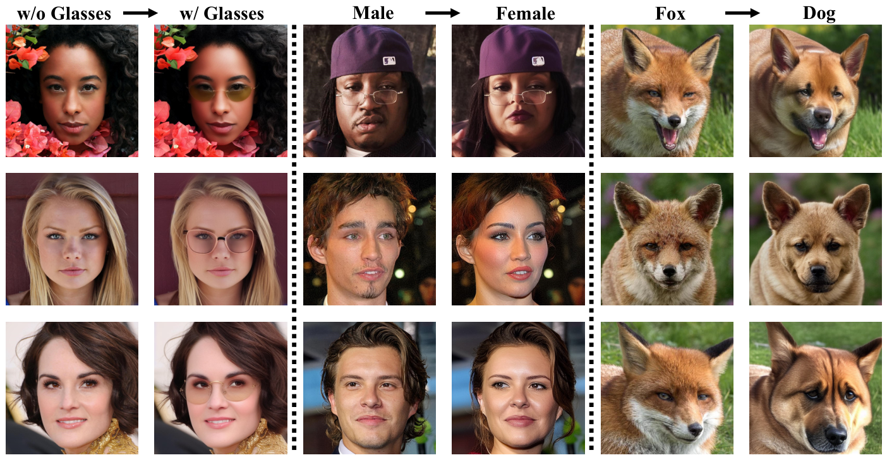

2024 · Journal article · Published
MirrorDiffusion: Stabilizing Diffusion Process in Zero-shot Image Translation by Prompts Redescription and Beyond
IEEE Signal Processing Letters, 2024

Overview
Introduces prompt redescription to align text prompts with latent codes during diffusion inversion, stabilizing structure-preserving zero-shot image translation.